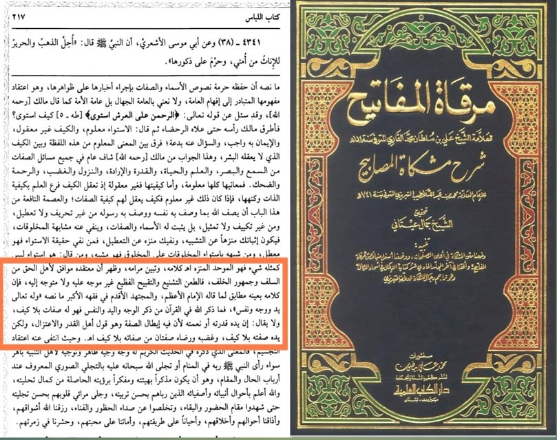

তাইমিদের আকিদাহ আর ইমাম আবু হানিফার রাহ. আকিদাহ এক ও অভিন্ন।”— ক'দিন পূর্বেও জোর…
৬ জুলাই, ২০২৩
“তাইমিদের আকিদাহ আর ইমাম আবু হানিফার রাহ. আকিদাহ এক ও অভিন্ন।”— ক'দিন পূর্বেও জোর গলায় বলেছিলাম কথাটি। আজ তাঁর প্রমাণ দিই।
হানাফি বিখ্যাত ইমাম মোল্লা আলি কারি রাহ, তালিবুল ইলম কে না চেনে। তিনি ইবনু তাইমিয়া ও ইবনুল কায়্যিম এর ওপর আরোপিত দেহবাদের সব তুহমতের শক্ত প্রতিবাদ করেন। অতঃপর ইবনুল কায়্যিম এর ‘মাদারিজ’ থেকে তাঁর আকিদাহর উদ্ধৃতি দেন— যেখানে ইবনুল কায়্যিম রাহ. ইস্তিওয়া, নুযুল, রহমত, ক্রোধ, হাসি তথা সকল সিফাতের বাহ্যিক ও হাকিকি অর্থ গ্রহণের জোর দাগিত দিয়েছেন এবং তাশবিহ ও তামসিল নাকচ করেছেন— তারপর আলি কারি রাহ. যা বলেছেন, সেটি মার্ক করে রাখার মতো। তিনি লেখেন,
ظهر أن معتقده موافق لأهل الحق من السلف وجمهور الخلف، فالطعن الشنيع والتقبيح الفظيع غير موجه عليه ولا متوجه إليه، فإن كلامه بعينه مطابق لما قاله الإمام الأعظم، والمجتهد الأقدم في فقهه الأكبر ما نصه: " وله تعالى يد ووجه ونفس، فما ذكر الله في القرآن من ذكر الوجه واليد والنفس فهو له صفات بلا كيف، ولا يقال إن يده قدرته أو نعمته ; لأن فيه إبطال الصفة، وهو قول أهل القدر والاعتزال، ولكن يده صفته بلا كيف، وغضبه ورضاه صفتان من صفاته بلا كيف اهـ
“স্পষ্ট হল যে, তাঁর আকিদাহ আহলে হক তথা সালাফে সালেহিন ও জমহুর খালাফের মুয়াফিক। সুতরাং এসব জঘন্য অপবাদ আর তিরস্কার তাঁর ওপর যায় না। কেননা তাঁর কথাটি ইমামে আজম ও মুজতাহিদে আকদম আবু হানিফা রাহ. তাঁর ‘ফিকহে আকবর'-এ যা বলেছেন, সে কথার সাথে সঙ্গতিপূর্ণ। তাঁর (আবু হানিফা) বক্তব্য হচ্ছে—
‘আল্লাহর ইয়াদ (হস্ত) আছে, ওয়াজহ (মুখমন্ডল) আছে, নফস (সত্তা) আছে, যেমনটা আল্লাহ কুরআনে এগুলি উল্লেখ করেছেন। কুরআন কারিমে আল্লাহ যা কিছু উল্লেখ করেছেন, যেমন মুখমন্ডল, হাত, নফস ইত্যাদি সবই তার সিফাত, কোনো স্বরূপ-প্রকৃতি বা কীভাবে তা নির্ণয় ব্যতিরেকে। এ কথা বলা যাবে না যে, তাঁর হাত অর্থ তাঁর ক্ষমতা অথবা তাঁর নিয়ামত। কারণ এরূপ ব্যাখ্যা করার অর্থ আল্লাহর সিফাত বাতিল করে দেওয়া। এরূপ ব্যাখ্যা করা কাদারিয়া ও মু’তাযিলা সম্প্রদায়ের মানুষদের রীতি। বরং, তাঁর হাত তাঁর সিফাত, কোনো স্বরূপ নির্ণয় ব্যতিরেকে। তাঁর ক্রোধ ও সন্তুষ্টি তাঁর সিফাতগুলোর মধ্য থেকে দু'টি সিফাত, কোনো স্বরূপ নির্ণয় ব্যতিরেকে।” [মিরকাত-৮/২১৭]
এত্থেকে প্রমাণ হয়, আবু হানিফা রাহ. যেমন ইসবাতের আকিদাহ রাখছেন, ঠিক সেই আকিদাহ শাইখান— ইবনু তাইমিয়া ও ইবনুল কায়্যিম রাহ. রাখতেন। তাঁদের আকিদাহ ও ইমামে আজমসহ সকল সালাফের আকিদাহ এক ও অভিন্ন। তাঁরা সবাই সিফাত সাব্যস্ত করতেন এবং তাওয়িলাতের বিরোধিতা করতেন।
এখন সালাফের আকিদাহ পোষণ করায় ইবনু তাইমিয়া ও তাঁর ছাত্র ইবনুল কায়্যিম দেহবাদি হল, ভালো কথা। কিন্তু দুই দেহবাদির আকিদাহ সমর্থন করায় মোল্লা আলি কারি রাহ'এর কী বিধান? এরচে' বড় প্রশ্ন, আবু হানিফার আকিদাহর সঙ্গে যে মিল তিনি দেখালেন, সেই আবু হানিফা রাহ'এর কী বিধান? তিনিও কি তবে দেহবাদি ছিলেন?!
#আল_উলু
